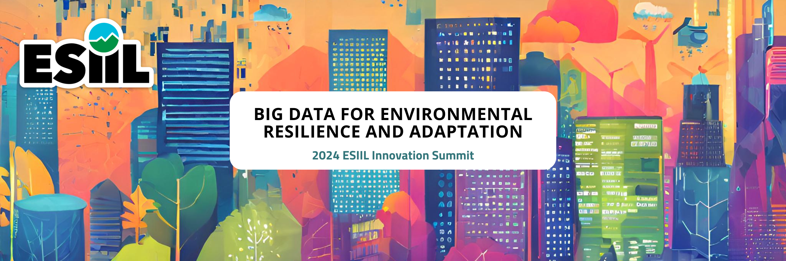

Big Data for Environmental Resilience and Adaptation
May 14th-16th, 2024 University of Colorado Boulder
ESIIL's 2024 Innovation Summit will offer an opportunity to use big data to understand resilience across genes, species, ecosystems and societies, advance ecological forecasting with solutions in mind, and inform adaptive management and natural climate solutions. The Summit will support attendees to advance data-informed courses of action for resilience and adaptation in the face of our changing environment. It will be an in-person ‘unconference’, enabling participants to dynamically work on themes that most inspire them, with inclusive physical and intellectual spaces for working together. Over two and a half days participants will work in teams to explore research questions using open science approaches, including: data infrastructure, artificial intelligence (AI) and novel analytics, and cloud computing. Participants will be encouraged to work across and respect different perspectives, with the aim of co-developing resilience solutions. ESIIL will provide participants with opportunities to learn more about cultural intelligence, ethical and open science practices, and leadership in the rapidly evolving field of environmental data science. Overall, the Summit will capitalize on the combination of open data and analytics opportunities to develop innovative or impactful approaches that improve environmental resilience and adaptation.
Why Big Data for Environmental Resilience and Adaptation? Humans have vastly altered ecosystems, leading to habitat and biodiversity loss, climate change, and altered nutrient and water cycles. At the same time, we are in an unprecedented moment where vast amounts of data are being produced about our planet faster than we can generate insights in a responsible way. We urgently need solutions that foster equitable use of our planet’s resources and better distribute the burden of adaptation.
The goals of the 2024 ESIIL Innovation Summit are to: Explore big data for environmental resilience and adaptation by identifying data synthesis opportunities and utilizing ESIIL cloud-compute capabilities. Promote best practices in ethical, open science, by supporting accessibility and usability of environmental data by all stakeholders. Champion ethical and equitable practices in environmental science, honoring data sovereignty and encouraging the responsible use of AI. Support diverse and inclusive teams by establishing collaborations around data-inspired themes across different disciplines, sectors, career stages, and backgrounds. Encourage the co-production of environmental knowledge with communities that are experiencing significant environmental challenges.
Agenda
Pre-Summit Trainings
April 24, 12-2pm MT: Head in the Clouds: Navigating the Basics of Cloud Computing
May 1, 12-2pm MT: Feet on the ground: Collaborating with Other People Using Cloud Computing
May 6, 9-11am MT: Voices in Concert: Cultural Intelligence, the Art of Team Science, and Community Skills
2024 ESIIL Innovation Summit
May 13: Early Registration and Optional Activities
May 14: 9am-5pm MT
May 15: 9am-5pm MT
May 16: 9am-12pm MT
Join our Slack Workspace
We will be using Slack for communication before, during, and after the Summit. Please join our Slack Workspace HERE.
Venue Information
Explore Boulder Like a Local!
Want to get out to explore while you’re here? This website has lots of information on things to do in Boulder, such as shopping, restaurants, nightlife, and much more!
Weather and Packing
Boulder is 5,430 feet in elevation and has a sunny, semi-arid climate. Hydrating during your stay is very important, as altitude sickness (headache, nausea, shortness of breath, dizziness, and tiredness) can occur. Weather conditions can change rapidly throughout each day and from day to day. Layers are always a good choice. In summer months, average high daily temperatures are in the 80s and 90s, with lows in the 50s and 60s. The sun is strong in Boulder, so please bring sunscreen, sunglasses, and a hat. Afternoon thunderstorms aren’t unusual, so a rain jacket is helpful. There are many trails near Boulder, so hiking or running shoes and a set of workout clothes can help get you outside during your stay.
Health & Safety Resources
- Campus and Off-Campus Emergencies 911
- CU Police Department (On-Campus, Non-Emergency) 303-492-6666
- City of Boulder Police Department (Non-Emergency) 303-441-3333
- Boulder Community Hospital 303-415-7000: 4747 Arapahoe Ave, Boulder, CO 80303
Technology Needs
The Summit will give participants an opportunity to collaborate with each other on environmental data sets in real time. We would like you to bring a laptop/notebook that has the ability to connect to the internet (don’t forget your chargers!). If you do not have one that you can bring with you, please email esiil@colorado.edu, as we may be able to request a few rentals from the university library.
Internet Access
Access wireless service on campus by selecting UCB Guest Wireless from your available Wi-Fi network options and accepting the terms and conditions upon opening your web browser. You will be prompted to re-accept these terms and conditions periodically. If you encounter difficulty accessing the Internet, call 303-735-HELP (4357) or email help@colorado.edu for assistance during their business hours. Check firewalls or security settings on your computer that could possibly complicate accessing the campus Wi-Fi system before you arrive.
Parking
Permits are required to park on CU Boulder campus. For any non-CU employees/students who will need to park a vehicle on campus, please email esiil@colorado for parking pass information. The nearest to the SEEC building is Lot 556 (Campus Map).
Hotels
Fairfield Inn and Suites Boulder
- ESIIL Event Rate: $152
- Location: 5397 South Boulder Rd., Boulder, CO (2.3 miles from venue)
- Contact: Ari Rubin, ari.rubin@marriott.com
- Complimentary breakfast buffet, free internet, free parking, and use of fitness center.
- Attendees can access this rate at: https://www.marriott.com/event-reservations/reservation-link.mi?id=1709058275827&key=GRP&app=resvlink
CU Boulder has set negotiated rates with hotels all around Boulder and the surrounding area, which should provide some different options depending on your budget. Of these hotels, the Marriott Boulder, Residence Inn Boulder Canyon Boulevard, Hilton Garden Inn, and Embassy Suites by Hilton Boulder are the closest to CU Boulder’s East Campus. The Hotel Boulderado and the St. Julien Hotel and Spa are further from East Campus, but are within walking distance of Boulder’s Pearl Street Mall–a lively, walking-only street with many shops and restaurants.
When booking with one of these hotels instructions on the site, note that you need to mention “The University of Colorado special rate” and that you will be staying for a university-sponsored event. You should be able to get these rates up until the day before the event, but we recommend booking sooner than later to ensure that there is space at your preferred location.
Transportation
Air Transportation
If you are flying in for the event you will want to fly into the Denver International Airport (DIA). Note that the airport is quite large and you will need to take an airport train to the main terminal.
Ground Transportation
Ride Share A Lyft or Uber or airport taxi are the most expensive option but also the most direct way to get from the airport to Boulder (often $70 or higher one way).
Public transportation to/from airport Transit from the Denver airport to Boulder is quite easy via the AB1 Boulder/Denver airport bus. This bus runs at least once an hour during the day, with more frequent trips at popular times. To locate the bus, follow signs in the Denver airport baggage claim area to ‘Train to city,’ which will lead you down an escalator. At the base of the escalator, instead of continuing straight towards the visible train station, turn left and you should see a bus terminal with an RTD ticket machine. Tickets for the AB1 can be purchased for $10. Find the gate for the AB1 / Downtown Boulder line.
Airport Shuttle Services If you would prefer to book a shuttle to/from DIA (Denver International Airport) & Boulder, there are three options:
- Green Ride Boulder: www.greenrideboulder.com 303-997-0238
- SuperShuttle: www.supershuttle.com 800-258-3826
- Eight Black Shuttle: https://eightblackairportshuttle.com 720-223-5474
Car Rentals There are a number of rental car agencies located at the Denver International Airport:
- Advantage: www.advantage.com
- Alamo: www.alamo.com
- Avis: www.avis.com
- Budget: www.budget.com
- Dollar: www.dollar.com
- Enterprise: www.enterprise.com
- Hertz: www.hertz.com
- National: www.nationalcar.com
- Payless: www.paylesscarrental.com
Additional car rental options include:
- eGo CarShare
- Zipcar
Transportation around the Boulder area
Boulder has a number of public transportation options for traversing Boulder and the surrounding area. Bus lines Information about Boulder’s local bus network can be found here. Note that the Skip, Bound, and Hop lines pass campus regularly. If you need to travel to Denver for any reason, the Flatiron Flyer bus connects Denver to Boulder. Currently the FF1 is the best option, and connects Denver’s Union Station to the Downtown Boulder Station (with numerous stops in-between).
Biking & Walking Boulder has an extensive system of city walking/biking paths; maps can be found here. Boulder B-Cycle is a community non-profit bike sharing system with daily and month passes available.
*This event is hosted by ESIIL and funded by the National Science Foundation (via award # DBI-2153040), and subject to the NSF’s terms and conditions.